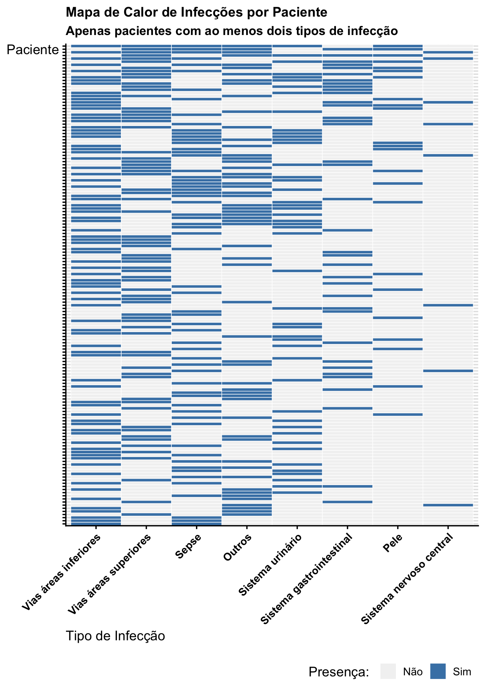
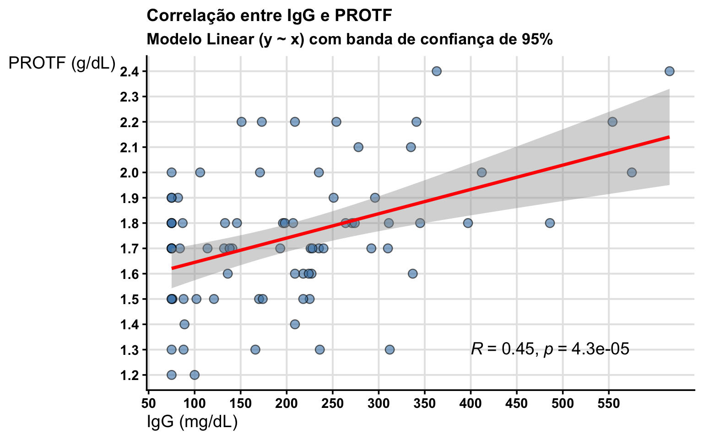
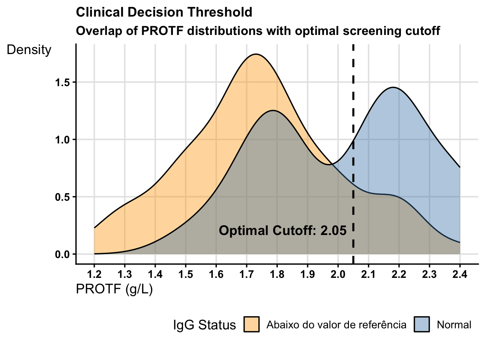
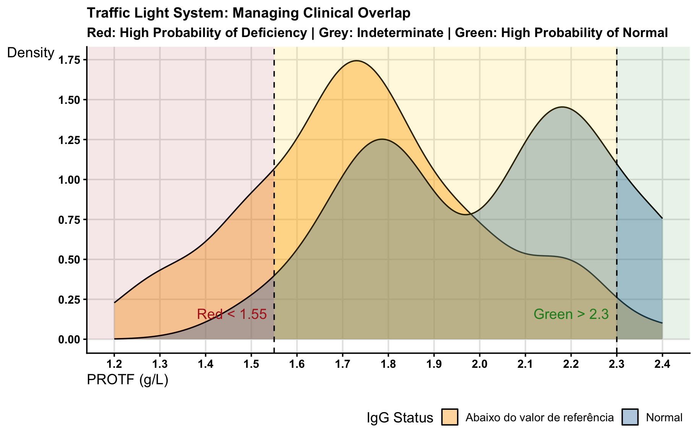
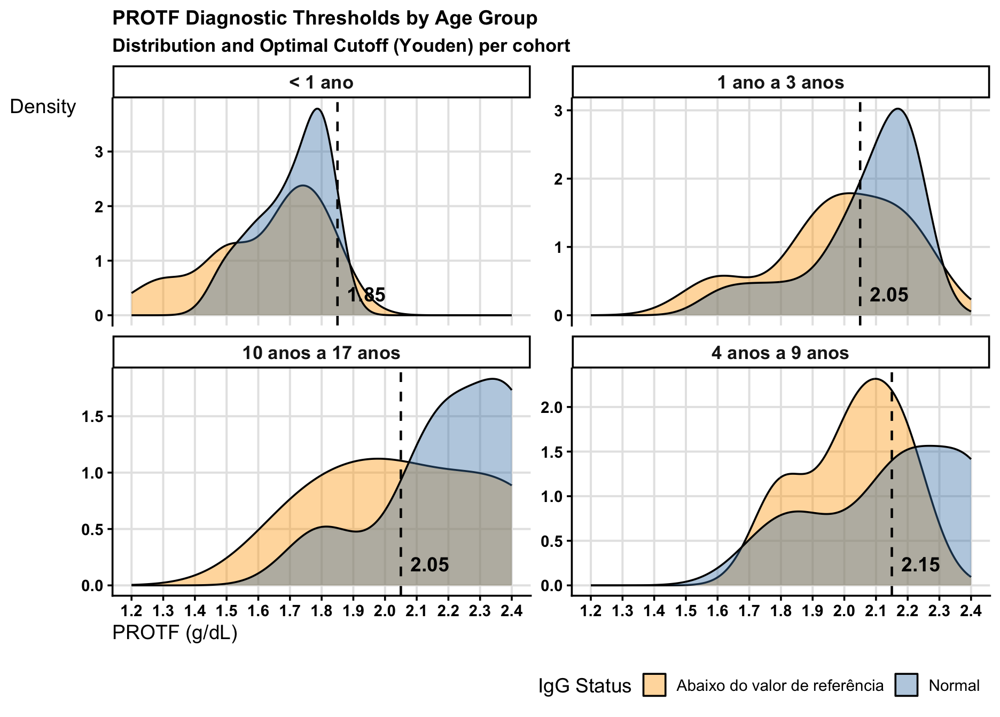
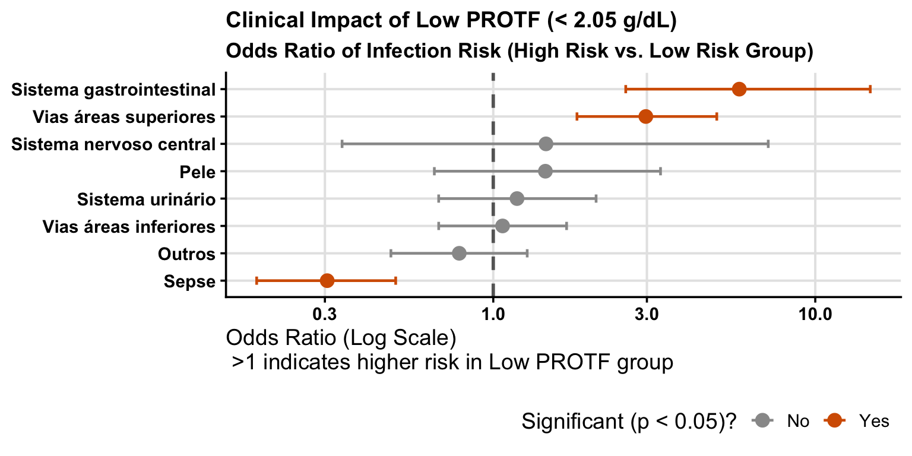
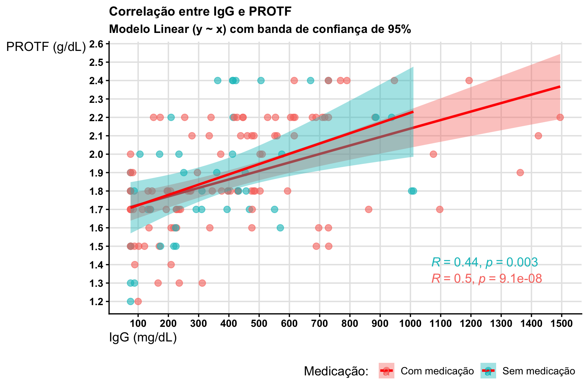
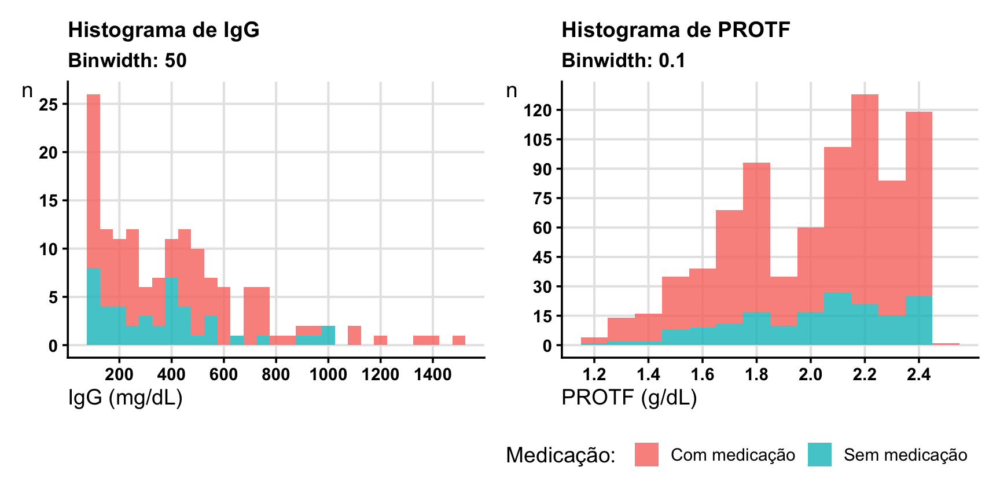

protf_url <-paste0("https://docs.google.com/spreadsheets/d/","1k3vlSk4e4mHMwTHZVnDpSTXyMReXLTGsgk82rHVILgQ/","edit?gid=402323031#gid=402323031")protf <- googlesheets4::read_sheet(protf_url) |> dplyr::distinct()protf <- protf |> dplyr::mutate(IDADE = lubridate::time_length( lubridate::interval(`6 - Data de Nascimento`, `5 - Data de Cadastro do Exame`), "years" ) )
1. Análise epidemiológica
a) Porcentagem de cada faixa etária na amostra
Code
protf |> dplyr::count(`3 - Insira Faixa etária do paciente`) |> dplyr::mutate(Percentual = n /nrow(protf))
# A tibble: 5 × 3
`3 - Insira Faixa etária do paciente` n Percentual
<chr> <int> <dbl>
1 1 ano a 3 anos 189 0.237
2 10 anos a 17 anos 151 0.189
3 4 anos a 9 anos 228 0.286
4 < 1 ano 228 0.286
5 > 18 anos 2 0.00251
b) Setores mais representativos na amostra
Code
protf |> dplyr::count(`2 - Insira o Setor de Solicitação do exame`) |> dplyr::mutate(Percentual = n /nrow(protf)) |> dplyr::arrange(dplyr::desc(n)) |>print(n =28)
# A tibble: 28 × 3
`2 - Insira o Setor de Solicitação do exame` n Percentual
<chr> <int> <dbl>
1 Laboratório de Analises Clinicas 181 0.227
2 UTI Cardiologia 126 0.158
3 Emergência SUS Interno 70 0.0877
4 Emergência Convenio 69 0.0865
5 UTI Neonatal 42 0.0526
6 UTI Geral 40 0.0501
7 Posto 11 Nefrologia 37 0.0464
8 Posto 52 29 0.0363
9 Posto 21 24 0.0301
10 Emergência SUS 22 0.0276
11 Posto 41 21 0.0263
12 Posto 42 21 0.0263
13 UTI Cirúrgica 21 0.0263
14 Posto 51 18 0.0226
15 Posto 23 14 0.0175
16 Emergência Convenio Internamento 11 0.0138
17 Infectologia 10 0.0125
18 Posto 33 10 0.0125
19 Posto 24 9 0.0113
20 Ambulatório Hemato-Oncologia 8 0.0100
21 Hemodialise 4 0.00501
22 Posto 31 4 0.00501
23 Emergência SUS Externo 2 0.00251
24 Ambulatório Especialidades I SUS 1 0.00125
25 Emergência Convenio Externo 1 0.00125
26 Posto 34 1 0.00125
27 Posto 43 1 0.00125
28 U.I 4º Andar - Posto 40 1 0.00125
c) Sexo
Code
protf |> dplyr::count(`4 - Sexo`) |> dplyr::mutate(Percentual = n /nrow(protf))
d) Presença/ausência de quadros infecciosos e sistema mais afetado em casos positivos para quadros infecciosos
Code
protf |> dplyr::count(`7 - Quadros infecciosos até o momento da coleta?`) |> dplyr::mutate(Percentual = n /nrow(protf))
# A tibble: 2 × 3
`7 - Quadros infecciosos até o momento da coleta?` n Percentual
<chr> <int> <dbl>
1 Não 425 0.533
2 Sim 373 0.467
Em quem tem caso positivo para quadro infeccioso
Code
protf |> dplyr::filter(`7 - Quadros infecciosos até o momento da coleta?`=="Sim") |> dplyr::select(`8 - Infecção em sistema nervoso central?`,`9 - Infecção de vias áreas superiores?`,`10 - Infecção de vias áreas inferiores?`,`11 - Infecção de sistema urinário?`,`12 - Infecção de sistema gastrointestinal?`,`13 - Infecção de pele?`,`14 - Sepse?`) |> tidyr::pivot_longer(`8 - Infecção em sistema nervoso central?`:`14 - Sepse?`) |> dplyr::filter(value =="Sim") |> dplyr::count(name) |> dplyr::mutate(Percentual = n /sum(n)) |> dplyr::arrange(dplyr::desc(n))
# A tibble: 7 × 3
name n Percentual
<chr> <int> <dbl>
1 10 - Infecção de vias áreas inferiores? 121 0.241
2 14 - Sepse? 113 0.225
3 9 - Infecção de vias áreas superiores? 111 0.221
4 11 - Infecção de sistema urinário? 68 0.135
5 12 - Infecção de sistema gastrointestinal? 48 0.0954
6 13 - Infecção de pele? 32 0.0636
7 8 - Infecção em sistema nervoso central? 10 0.0199
Dos 373 pacientes com quadro infeccioso, 301 apresentaram em mais de um sistema (ao menos em dois). 80.7%.
Nestes 301, estes são os sintomas que aparecem e em quantos dos 301 pacientes.
Code
proxy <- protf |> dplyr::filter(`7 - Quadros infecciosos até o momento da coleta?`=="Sim" ) |> dplyr::select(`1 - Insira o Prontuário do Paciente`,`8 - Infecção em sistema nervoso central?`,`9 - Infecção de vias áreas superiores?`,`10 - Infecção de vias áreas inferiores?`,`11 - Infecção de sistema urinário?`,`12 - Infecção de sistema gastrointestinal?`,`13 - Infecção de pele?`,`14 - Sepse?`) |> tidyr::pivot_longer(!`1 - Insira o Prontuário do Paciente`) |> dplyr::filter(value =="Sim") |> dplyr::group_by(`1 - Insira o Prontuário do Paciente`) |> dplyr::mutate(n = dplyr::n()) |> dplyr::ungroup() |> dplyr::filter(n >1) |> dplyr::arrange(dplyr::desc(n), `1 - Insira o Prontuário do Paciente`) ( proxy2 <- proxy |> dplyr::select(!c(value, n)) |>mutate(name = stringr::str_remove(name, "^[0-9]+ - "),name = stringr::str_remove(name, "\\?"),name = stringr::str_remove(name, "Infecção (de|em) "),name = stringr::str_to_sentence(name)) |> dplyr::count(name) |> dplyr::arrange(dplyr::desc(n)) |> dplyr::mutate(Percentual = n /nrow(proxy)) )
# A tibble: 7 × 3
name n Percentual
<chr> <int> <dbl>
1 Vias áreas inferiores 77 0.256
2 Vias áreas superiores 62 0.206
3 Sepse 53 0.176
4 Sistema urinário 45 0.150
5 Sistema gastrointestinal 34 0.113
6 Pele 23 0.0764
7 Sistema nervoso central 7 0.0233
O máximo de infecções que um paciente apresenta são 5, e 5 pacientes ficaram em tal situação.
Code
proxy |> dplyr::mutate(value =ifelse(value =="Sim", 1, 0)) |> tidyr::pivot_wider(names_from = name, values_from = value, values_fill =0) |> dplyr::select(-n) |> tidyr::pivot_longer(-`1 - Insira o Prontuário do Paciente`, names_to ="Infection_Type", values_to ="Present") |>mutate(Infection_Type = stringr::str_remove(Infection_Type, "^[0-9]+ - "),Infection_Type = stringr::str_remove(Infection_Type, "\\?"),Infection_Type = stringr::str_remove(Infection_Type, "Infecção (de|em) "),Infection_Type = stringr::str_to_sentence(Infection_Type)) |>ggplot() +aes(x =factor(Infection_Type, levels =unique(proxy2$name)), y =factor(`1 - Insira o Prontuário do Paciente`, levels =unique(proxy$`1 - Insira o Prontuário do Paciente`) |>rev() ), fill =as.factor(Present) ) +geom_tile(color ="white") +# Adds a grid line effectscale_fill_manual(values =c("0"="grey95", "1"="steelblue"),labels =c("Não", "Sim"),name ="Presença: ") +labs(x ="Tipo de Infecção", y ="Paciente",title ="Mapa de Calor de Infecções por Paciente",subtitle ="Apenas pacientes com ao menos dois tipos de infecção") +theme(axis.text.x =element_text(angle =45, hjust =1)) +scale_y_discrete(labels =NULL)

e) Porcentagem de indivíduos com comorbidade e comorbidades mais frequentes
Code
protf |> dplyr::count(`20 - Paciente possui alguma comorbidade/diagnostico de base?`) |> dplyr::mutate(Percentual = n /nrow(protf))
# A tibble: 2 × 3
20 - Paciente possui alguma comorbidade/diagnostico de base…¹ n Percentual
<chr> <int> <dbl>
1 Não 157 0.197
2 Sim 641 0.803
# ℹ abbreviated name:
# ¹`20 - Paciente possui alguma comorbidade/diagnostico de base?`
Code
protf |> dplyr::filter(`20 - Paciente possui alguma comorbidade/diagnostico de base?`=="Sim" ) |> dplyr::count(`20.1 - Qual comorbidade o paciente possui?-Em caso negativo responder com NA`) |> dplyr::mutate(Percentual = n /642) |> dplyr::arrange(dplyr::desc(n)) |> dplyr::filter(n >1) |>print(n =50)
# A tibble: 2 × 3
`21 - Paciente realiza hemodiálise?` n Percentual
<chr> <int> <dbl>
1 Não 733 0.919
2 Sim 65 0.0815
g) Porcentagem de pacientes que passaram por cirurgia nos 30 dias antes do exame
Code
protf |> dplyr::count(`22 - Paciente passou por cirurgia nos 30 dias que antecederam a realização do exame PROTF?` ) |> dplyr::mutate(Percentual = n /nrow(protf))
# A tibble: 2 × 3
22 - Paciente passou por cirurgia nos 30 dias que anteceder…¹ n Percentual
<chr> <int> <dbl>
1 Não 643 0.806
2 Sim 155 0.194
# ℹ abbreviated name:
# ¹`22 - Paciente passou por cirurgia nos 30 dias que antecederam a realização do exame PROTF?`
h) Porcentagem de pacientes que passaram por tratamento oncológico nos 30 antes do exame
Code
protf |> dplyr::count(`23 - Paciente passou por tratamento oncológico nos 30 dias que antecederam a realização do exame PROTF?` ) |> dplyr::mutate(Percentual = n /nrow(protf))
# A tibble: 2 × 3
23 - Paciente passou por tratamento oncológico nos 30 dias …¹ n Percentual
<chr> <int> <dbl>
1 Não 766 0.960
2 Sim 32 0.0401
# ℹ abbreviated name:
# ¹`23 - Paciente passou por tratamento oncológico nos 30 dias que antecederam a realização do exame PROTF?`
i) Porcentagem de pacientes que fizeram uso de medicação
Code
protf |> dplyr::count(`26 - Paciente faz uso de medicação que pode causar imunodeficiência nos 30 dias que antecederam a realização do exame PROTF?` ) |> dplyr::mutate(Percentual = n /nrow(protf))
# A tibble: 2 × 3
26 - Paciente faz uso de medicação que pode causar imunodef…¹ n Percentual
<chr> <int> <dbl>
1 Não 634 0.794
2 Sim 164 0.206
# ℹ abbreviated name:
# ¹`26 - Paciente faz uso de medicação que pode causar imunodeficiência nos 30 dias que antecederam a realização do exame PROTF?`
j) Porcentagem de pacientes com registro de óbito. Definir intervalo de tempo entre a data do exame e a data do óbito.
Code
protf |> dplyr::count(`33 - Paciente possui registro de óbito?`) |> dplyr::mutate(Percentual = n /nrow(protf))
# A tibble: 2 × 3
`33 - Paciente possui registro de óbito?` n Percentual
<chr> <int> <dbl>
1 Não 652 0.817
2 Sim 146 0.183
Code
proxy <- protf |> dplyr::filter(`33 - Paciente possui registro de óbito?`=="Sim") |> dplyr::select(`1 - Insira o Prontuário do Paciente`, # ---------------------`5 - Data de Cadastro do Exame`, `33.2 - Data de óbito`) |> dplyr::mutate(Intervalo_dias = lubridate::time_length( lubridate::interval(`5 - Data de Cadastro do Exame`, `33.2 - Data de óbito`), "days" ),Intervalo_meses = lubridate::time_length( lubridate::interval(`5 - Data de Cadastro do Exame`, `33.2 - Data de óbito`), "months" ) )proxy |> dplyr::select(-`1 - Insira o Prontuário do Paciente`)
Min. 1st Qu. Median Mean 3rd Qu. Max.
0.0 10.0 40.5 193.3 204.2 2047.0
Code
summary(proxy$Intervalo_meses)
Min. 1st Qu. Median Mean 3rd Qu. Max.
0.0000 0.3226 1.3167 6.3496 6.7374 67.2581
146 pacientes vieram a óbito (18.29%), com um tempo médio de sobrevida de 193 dias (6.3 meses) - mediana de 40 dias (1.3 meses).
2. Análise de indivíduos com dosagem de IgG
a) A partir dos valores de dosagem de IgG, verificar se existe correlação com os valores de PROTF; Não considerar na estatistica os pacientes que fazem reposição de IgG - pois é um tratamento, logo não é um dado basal
138 pacientes (17.3%) tem registro do valor de IgG e não fizeram reposição.
Code
( proxy <- protf |> dplyr::filter(`19 - Fez reposições de Imunoglobulinas durante os 30 dias que antecederam a realização do exame PROTF ?`!="Sim"&`18.1 - Como se encontra o resultado de IgG?NA = não se aplica`!="NA" ) |> dplyr::rename(IgG =`18.2 - Qual resultado da dosagem? Colocar apenas número-Responder com NA em caso de não realização do exame`) |> dplyr::rename(PROTF =`16 - Resultado do Primeiro exame`) |> dplyr::select(IgG, PROTF) |> tidyr::unnest(IgG) )
Correlação linear de Pearson de 0.47 (forte e estatísticamente significativa, 6.6e-09 = 0.0000000066).
Contudo, vemos que o que melhor se adequa aos dados é um comportamento quadrático - subida linear (não tão forte) até um igG ao redor de 600 e a partir dali uma curva descendente, mas temos poucos pacientes passando desse valor.
Code
proxy |>ggplot() +aes(x = IgG, y = PROTF) +geom_point(size =3, shape =21, fill ="steelblue", alpha =0.6) +geom_smooth(method ="lm", formula = y ~poly(x, 2), color ="red", se =TRUE) + ggpubr::stat_cor(method ="pearson", label.x =1100, label.y =1.3) +labs(title ="Correlação entre IgG e PROTF",subtitle ="Modelo Linear Quadrático (y ~ x²) com banda de confiança de 95%",x ="IgG (mg/dL)", y ="PROTF (g/dL)") +scale_x_continuous(breaks =seq(0, 1500, by =100)) +scale_y_continuous(breaks =seq(0, 3, by =0.1))
b) Entre os indivíduos com dosagem de IgG abaixo do valor de referência, qual foi o valor médio, mínimo e máximo do valor de PROTF?
Code
protf |> dplyr::count(`18.1 - Como se encontra o resultado de IgG?NA = não se aplica` )
# A tibble: 3 × 2
`18.1 - Como se encontra o resultado de IgG?\n\nNA = não se aplica` n
<chr> <int>
1 Abaixo do valor de referência 78
2 NA 651
3 Normal 69
Code
proxy <- protf |> dplyr::filter(`18.1 - Como se encontra o resultado de IgG?NA = não se aplica`=="Abaixo do valor de referência" ) |> dplyr::rename(IgG =`18.2 - Qual resultado da dosagem? Colocar apenas número-Responder com NA em caso de não realização do exame`) |> dplyr::rename(PROTF =`16 - Resultado do Primeiro exame`) |> dplyr::select(IgG, PROTF) |> tidyr::unnest(IgG) summary(proxy$PROTF)
Min. 1st Qu. Median Mean 3rd Qu. Max.
1.200 1.600 1.700 1.744 1.900 2.400
Code
proxy |>ggplot() +aes(x = IgG, y = PROTF) +geom_point(size =3, shape =21, fill ="steelblue", alpha =0.6) +geom_smooth(method ="lm", formula = y ~poly(x, 1), color ="red", se =TRUE) + ggpubr::stat_cor(method ="pearson", label.x =400, label.y =1.3) +labs(title ="Correlação entre IgG e PROTF",subtitle ="Modelo Linear (y ~ x) com banda de confiança de 95%",x ="IgG (mg/dL)", y ="PROTF (g/dL)") +scale_x_continuous(breaks =seq(0, 550, by =50)) +scale_y_continuous(breaks =seq(0, 3, by =0.1))

PROTF médio de 1.744, min 1.2 e máx 2.4.
c) Entre os indivíduos com dosagem de IgG acima do valor de referência e que NÃO fazem reposição de IgG, qual foi o valor médio, mínimo e máximo do valor de PROTF?
Nenhum paciente com IgG acima do valor de referência.
d) Entre os indivíduos com dosagem de IgG abaixo do valor de referência, quantos possuíam comorbidade? Quais eram mais frequentes?
72 pacientes, 38 diferentes combinações de comorbidades - apenas 5 ocorrendo em ao menos dois pacientes.
Code
protf |> dplyr::filter(`18.1 - Como se encontra o resultado de IgG?NA = não se aplica`=="Abaixo do valor de referência" ) |> dplyr::count(`20 - Paciente possui alguma comorbidade/diagnostico de base?`)
# A tibble: 2 × 2
`20 - Paciente possui alguma comorbidade/diagnostico de base?` n
<chr> <int>
1 Não 6
2 Sim 72
Code
protf |> dplyr::filter(`18.1 - Como se encontra o resultado de IgG?NA = não se aplica`=="Abaixo do valor de referência"&`20 - Paciente possui alguma comorbidade/diagnostico de base?`=="Sim" ) |> dplyr::count(`20.1 - Qual comorbidade o paciente possui?-Em caso negativo responder com NA`) |> dplyr::arrange(dplyr::desc(n)) |> dplyr::filter(n >1)
# A tibble: 5 × 2
20.1 - Qual comorbidade o paciente possui?\n\n-Em caso negativo respo…¹ n
<chr> <int>
1 Cardiopatia 21
2 Nefropatia 9
3 Cardiopatia; Síndrome de Down 6
4 Cardiopatia; Prematuridade 3
5 Cardiopatia; Síndrome de Down; Hipotireoidismo 2
# ℹ abbreviated name:
# ¹`20.1 - Qual comorbidade o paciente possui?\n\n-Em caso negativo responder com NA`
3. Análise dos menores de 1 ano
a) Entre os menores de 1 ano, quantos apresentavam a comorbidade “Prematuridade”?
Dentre os 201 pacientes menores de 1 ano e com comorbidade, temos 77 diferentes combinações de comorbidades.
Code
protf |> dplyr::count(`3 - Insira Faixa etária do paciente`)
# A tibble: 5 × 2
`3 - Insira Faixa etária do paciente` n
<chr> <int>
1 1 ano a 3 anos 189
2 10 anos a 17 anos 151
3 4 anos a 9 anos 228
4 < 1 ano 228
5 > 18 anos 2
Code
protf |> dplyr::filter(`3 - Insira Faixa etária do paciente`=="< 1 ano") |> dplyr::count(`20 - Paciente possui alguma comorbidade/diagnostico de base?`)
# A tibble: 2 × 2
`20 - Paciente possui alguma comorbidade/diagnostico de base?` n
<chr> <int>
1 Não 27
2 Sim 201
Code
# protf |># dplyr::filter(# `3 - Insira Faixa etária do paciente` == "< 1 ano"# ) |># dplyr::rename(Comorbidade = `20.1 - Qual comorbidade o paciente possui?# # -Em caso negativo responder com NA`) |># dplyr::count(Comorbidade)protf |> dplyr::rename(Comorbidade =`20.1 - Qual comorbidade o paciente possui?-Em caso negativo responder com NA`) |> dplyr::filter(`3 - Insira Faixa etária do paciente`=="< 1 ano"& stringr::str_detect(Comorbidade, "Prematuridade") ) |> dplyr::count(Comorbidade) |> dplyr::arrange(dplyr::desc(n))
b) Levando em consideração pacientes que fizeram os exames PROTF + IgG, definir um valor de referência para PROTF levando como referência a dosagem de IgG
147 pacientes.
Code
( proxy <- protf |> dplyr::rename(IgG_Referência =`18.1 - Como se encontra o resultado de IgG?NA = não se aplica`) |> dplyr::rename(IgG =`18.2 - Qual resultado da dosagem? Colocar apenas número-Responder com NA em caso de não realização do exame`) |> dplyr::rename(PROTF =`16 - Resultado do Primeiro exame`) |> dplyr::filter(IgG_Referência !="NA") |> dplyr::select(IgG, PROTF, IgG_Referência) |> tidyr::unnest(IgG) )
# A tibble: 147 × 3
IgG PROTF IgG_Referência
<dbl> <dbl> <chr>
1 1010 1.8 Normal
2 486 1.8 Abaixo do valor de referência
3 790 2.4 Normal
4 412 2.4 Normal
5 729 2.4 Normal
6 947 2.4 Normal
7 510 2 Normal
8 616 2.4 Abaixo do valor de referência
9 1097 1.7 Normal
10 1423 2.1 Normal
# ℹ 137 more rows
Code
proxy |> dplyr::count(IgG_Referência)
# A tibble: 2 × 2
IgG_Referência n
<chr> <int>
1 Abaixo do valor de referência 78
2 Normal 69
Code
proxy |>ggplot() +aes(x = IgG, y = PROTF, fill =IgG_Referência, color = IgG_Referência) +geom_point(size =3, shape =21, alpha =0.6) +geom_smooth(method ="lm", formula = y ~poly(x, 1), color ="red", se =TRUE) + ggpubr::stat_cor(method ="pearson", label.x.npc =0.7, # 70% across the x-axislabel.y.npc ="bottom") +labs(title ="Correlação entre IgG e PROTF",subtitle ="Modelo Linear (y ~ x) com banda de confiança de 95%",fill ="Referência: ", color ="Referência: ",x ="IgG (mg/dL)", y ="PROTF (g/dL)") +scale_x_continuous(breaks =seq(0, 1500, by =100)) +scale_y_continuous(breaks =seq(1, 3, by =0.1))
lin_mod <-lm(PROTF ~ IgG, data = proxy)# Fit a segmented model (it estimates where the 'plateau' starts)# You provide an initial guess for the breakpoint (e.g., IgG = 600)seg_mod <-segmented(lin_mod, seg.Z =~IgG, psi =600)# seg_mod$psi[, "Est."] + c(-1.95, 1.96) * seg_mod$psi[, "St.Err"]proxy |>ggplot(aes(x = IgG, y = PROTF)) +annotate("rect", xmin =-Inf, xmax =Inf, ymin = ref_stats$lower_ref, ymax = ref_stats$upper_ref, fill ="steelblue", alpha =0.3) +annotate("segment", x =-Inf, xend =Inf, y = ref_stats$mean_protf, yend = ref_stats$mean_protf, color ="steelblue", linetype ="dashed", linewidth =1) +geom_point(aes(fill = IgG_Referência), shape =21, size =3, alpha =0.8) +geom_smooth(aes(color = IgG_Referência), method ="lm", formula = y ~poly(x, 1), se =TRUE, linewidth =1 ) +geom_vline(xintercept = seg_mod$psi[, "Est."], linetype ="dashed", alpha =0.7) +scale_fill_manual(values =c("Normal"="white", "Abaixo do valor de referência"="orange"),labels =c("Abaixo da Referência", "Normal") ) +scale_color_manual(values =c("Normal"="darkblue", "Abaixo do valor de referência"="darkorange"),labels =c("Abaixo da Referência", "Normal") ) +labs(title ="Baseline de PROTF Baseado no Platô de IgG (Grupo Normal)",subtitle ="Linhas de tendência com Intervalo de Confiança de 95% (sombreado)",x ="IgG (mg/dL)", y ="PROTF (g/dL)",fill ="Classificação IgG: ", color ="Classificação IgG: " ) +scale_x_continuous(breaks =seq(0, 1500, by =100)) +scale_y_continuous(breaks =seq(1, 2.5, by =0.1))
Além disso, estimamos um ponto de corte para ver onde se inicia o platô - onde termina o padrão de crescimento e se inicia a estagnação de PROTF médio em relação ao IgG, é em 616.
Code
summary(seg_mod)
***Regression Model with Segmented Relationship(s)***
Call:
segmented.lm(obj = lin_mod, seg.Z = ~IgG, psi = 600)
Estimated Break-Point(s):
Est. St.Err
psi1.IgG 615.999 92.285
Coefficients of the linear terms:
Estimate Std. Error t value Pr(>|t|)
(Intercept) 1.5728314 0.0478356 32.880 <2e-16 ***
IgG 0.0008549 0.0001438 5.947 2e-08 ***
U1.IgG -0.0009245 0.0002409 -3.838 NA
---
Signif. codes: 0 '***' 0.001 '**' 0.01 '*' 0.05 '.' 0.1 ' ' 1
Residual standard error: 0.2533 on 143 degrees of freedom
Multiple R-Squared: 0.2985, Adjusted R-squared: 0.2837
Boot restarting based on 6 samples. Last fit:
Convergence attained in 2 iterations (rel. change 1.1437e-07)
Aqui é apenas para “comprovar” que o grupo “Normal” não tem inclinação estatísticamente significativa. Neste grupo, independente do valor de IgG se espera o mesmo valor de PROTF.
Code
proxy |> dplyr::filter(IgG_Referência !="Acima do valor de referência") |> dplyr::group_by(IgG_Referência) |> dplyr::group_modify(~ broom::tidy(lm(PROTF ~ IgG, data = .x), conf.int =TRUE)) |> dplyr::filter(term =="IgG") |> dplyr::select(IgG_Referência, estimate, std.error, p.value, conf.low, conf.high)
# A tibble: 2 × 6
# Groups: IgG_Referência [2]
IgG_Referência estimate std.error p.value conf.low conf.high
<chr> <dbl> <dbl> <dbl> <dbl> <dbl>
1 Abaixo do valor de referência 0.000960 0.000221 0.0000432 0.000520 0.00140
2 Normal 0.000119 0.000123 0.337 -0.000126 0.000364
Explicação mais detalhada
1. Establishment of the Baseline Reference
To define a physiological PROTF baseline, the Normal Group (patients with IgG within the reference range) was used as the normative standard.
Process: We calculated the mean and standard deviation (SD) for the Normal group. The shaded area in the visualization represents the Mean ± 2 SD, covering approximately 95% of the expected physiological variation.
Interpretation: PROTF values falling below this band indicate a pathological deficit relative to the established biological baseline.
2. Group Dynamics: The “Rise vs. Plateau” Effect
The relationship was modeled separately for each group to identify how IgG deficiency impacts PROTF measurements.
Below Reference Group: This group exhibits a significant positive slope (p < 0.05). This demonstrates that in patients with low IgG, PROTF is “coupled” to IgG levels—as IgG increases, PROTF rises proportionally.
Normal Group: This group shows a slope near zero (the confidence interval includes zero). This confirms a Plateau effect, where PROTF reaches a steady state and no longer responds to further IgG increases, representing the true biological baseline.
3. Segmented Regression (Inflection Point)
A Segmented (Broken-stick) Regression was applied to mathematically determine the threshold of stabilization.
The Breakpoint: The model identifies the specific IgG coordinate where the linear rise ends and the plateau begins.
Clinical Utility: This point defines the “Critical IgG Threshold” required for a PROTF measurement to be considered stable and diagnostically reliable, independent of hypogammaglobulinemia interference.
Summary of Statistical Findings
A positive linear dependency was observed between PROTF and IgG strictly within the deficient group (p < 0.05). Conversely, the normal group exhibited a plateau (p > 0.05), establishing a stable reference baseline.
How to use PROTF to predict IgG deficiency
Minimizing false positives, prioritizing Specificity and Positive Predictive Value (PPV).
Catch fewer sick people (lower sensitivity), but almost everyone catched will actually be sick.
Code
# 1. Prepare Dataproxy_roc <- proxy |>filter(IgG_Referência !="Acima do valor de referência") |>mutate(low_igg_flag =ifelse(IgG_Referência =="Abaixo do valor de referência", 1, 0))# 2. Generate ROC Objectroc_obj <-roc(proxy_roc$low_igg_flag, proxy_roc$PROTF, quiet =TRUE)# 3. Extract Scenarios# A. Max Specificity (The "Perfect" but useless one)scen_max_spec <-coords(roc_obj, "all", ret =c("threshold", "specificity", "sensitivity", "ppv")) |>filter(specificity ==1) |>slice(1) |>mutate(Strategy ="Max Specificity (100%)")# B. High Specificity (The >90% attempt)scen_high_spec <-coords(roc_obj, "all", ret =c("threshold", "specificity", "sensitivity", "ppv")) |>filter(specificity >=0.90) |>arrange(desc(sensitivity)) |># Get best sensitivity in this rangeslice(1) |>mutate(Strategy ="High Specificity (>90%)")# C. Balanced (Youden's Index - The Winner)scen_balanced <-coords(roc_obj, "best", best.method ="youden", ret =c("threshold", "specificity", "sensitivity", "ppv")) |>mutate(Strategy ="Balanced (Youden's Index)")# 4. Combine into a Summary Tableroc_summary <-bind_rows(scen_max_spec, scen_high_spec, scen_balanced) |> dplyr::select( Strategy, Threshold = threshold, Sensitivity = sensitivity, Specificity = specificity, PPV = ppv )# Display Tablekable(roc_summary, digits =3, caption ="Comparison of Cutoff Strategies")
Comparison of Cutoff Strategies
Strategy
Threshold
Sensitivity
Specificity
PPV
…1
Max Specificity (100%)
1.45
0.115
1.000
1.000
…2
High Specificity (>90%)
1.65
0.321
0.913
0.806
threshold
Balanced (Youden’s Index)
2.05
0.872
0.536
0.680
Code
# 5. Visualization: Density Plot with the Winner Cutoffoptimal_cutoff <- scen_balanced$thresholdproxy |>filter(IgG_Referência !="Acima do valor de referência") |>ggplot(aes(x = PROTF, fill = IgG_Referência)) +geom_density(alpha =0.4) +geom_vline(xintercept = optimal_cutoff, linetype ="dashed", color ="black", linewidth =1) +annotate("text", x = optimal_cutoff, y =0, label =paste(" Optimal Cutoff:", round(optimal_cutoff, 2)), hjust =1.05, vjust =-2, angle =0, fontface ="bold") +scale_fill_manual(values =c("Normal"="steelblue", "Abaixo do valor de referência"="orange")) +labs(title ="Clinical Decision Threshold",subtitle ="Overlap of PROTF distributions with optimal screening cutoff",x ="PROTF (g/dL)", y ="Density", fill ="IgG Status" ) +scale_x_continuous(breaks =seq(1, 2.5, by =0.1))

Diagnostic Screening: PROTF as a Predictor for IgG Testing
While previous sections established how IgG influences PROTF, we also investigated the reverse relationship: identifying a PROTF threshold that serves as a clinical trigger for ordering an IgG quantification.
To determine this threshold, we performed a Receiver Operating Characteristic (ROC) curve analysis. We evaluated three distinct cutoff strategies to balance the trade-off between Precision (minimizing unnecessary tests) and Safety (preventing missed diagnoses).
Analysis of Cutoff Strategies
The table above summarizes the performance of three potential thresholds:
Max Specificity Strategy (Cutoff ~1.45):
Pros: Zero false positives (PPV = 100%).
Cons: Extremely low sensitivity (~11%). This threshold misses 9 out of 10 deficient patients, rendering it useless for screening.
High Specificity Strategy (Cutoff ~1.65):
Pros: High precision (PPV > 80%).
Cons: Sensitivity remains poor (~32%). Using this cutoff would still fail to identify the majority of patients with hypogammaglobulinemia.
Balanced “Youden” Strategy (Cutoff ~2.05):
Pros: Optimizes the sum of sensitivity and specificity. It achieves a Sensitivity of ~87%, ensuring that the vast majority of deficient patients are flagged.
Cons: Lower specificity (~54%), implying that roughly 1 in 3 positive screens will result in a normal IgG upon confirmation (False Positives).
Conclusion and Recommendation
Based on the analysis, strictly minimizing false positives results in an unacceptable loss of diagnostic sensitivity. Therefore, we recommend the Balanced Strategy as the clinical standard.
Recommendation: A PROTF value below 2.05 g/L should trigger a follow-up IgG test. This threshold prioritizes patient safety by maintaining high detection rates (Sensitivity ~87%), accepting a moderate rate of confirmatory testing as a necessary trade-off for an effective screening tool.
Advanced Strategy: The “Indeterminate Zone” Approach
Code
# 1. Prepare Data & ROCproxy_roc <- proxy |>filter(IgG_Referência !="Acima do valor de referência") |>mutate(low_igg_flag =ifelse(IgG_Referência =="Abaixo do valor de referência", 1, 0))roc_obj <-roc(proxy_roc$low_igg_flag, proxy_roc$PROTF, quiet =TRUE)# 2. Extract All Coordinatesall_coords <-coords(roc_obj, "all", ret =c("threshold", "specificity", "sensitivity"))# 3. Find the Boundaries (Using >= Logic to avoid NA)# A. LOWER CUTOFF (Red Zone Boundary)# Logic: We want High Specificity (>= 95%) to be sure they are sick.# We pick the threshold with the highest sensitivity possible within that constraint.cutoff_red <- all_coords |>filter(specificity >=0.95) |>arrange(desc(sensitivity)) |>slice(1) |>pull(threshold)# B. UPPER CUTOFF (Green Zone Boundary)# Logic: We want High Sensitivity (>= 95%) to be sure we don't miss anyone.# We pick the threshold with the highest specificity possible within that constraint.cutoff_green <- all_coords |>filter(sensitivity >=0.95) |>arrange(desc(specificity)) |>slice(1) |>pull(threshold)# Check if boundaries were found (Assign default if data is too sparse)if(length(cutoff_red) ==0) cutoff_red <-min(proxy_roc$PROTF)if(length(cutoff_green) ==0) cutoff_green <-max(proxy_roc$PROTF)# 4. Print Values for verificationrbind(paste("Red Zone (Deficient) <", round(cutoff_red, 2)),paste("Grey Zone (Indeterminate):", round(cutoff_red, 2), "-", round(cutoff_green, 2)),paste("Green Zone (Safe) >", round(cutoff_green, 2)))
[,1]
[1,] "Red Zone (Deficient) < 1.55"
[2,] "Grey Zone (Indeterminate): 1.55 - 2.3"
[3,] "Green Zone (Safe) > 2.3"
Code
# 2. Visualize the Zonesproxy |>filter(IgG_Referência !="Acima do valor de referência") |>ggplot(aes(x = PROTF, fill = IgG_Referência)) +geom_density(alpha =0.4) +# Red Zoneannotate("rect", xmin =-Inf, xmax = cutoff_red, ymin =0, ymax =Inf, fill ="firebrick", alpha =0.1) +# Grey Zoneannotate("rect", xmin = cutoff_red, xmax = cutoff_green, ymin =0, ymax =Inf, fill ="gold", alpha =0.15) +# Green Zoneannotate("rect", xmin = cutoff_green, xmax =Inf, ymin =0, ymax =Inf, fill ="forestgreen", alpha =0.1) +geom_vline(xintercept =c(cutoff_red, cutoff_green), linetype ="dashed") +annotate("text", x = cutoff_red, y =0, label =paste("Red <", round(cutoff_red, 2)), hjust =1.1, vjust =-2, angle =0, color ="firebrick") +annotate("text", x = cutoff_green, y =0, label =paste("Green >", round(cutoff_green, 2)), hjust =1.1, vjust =-2, angle =0, color ="forestgreen") +scale_fill_manual(values =c("Normal"="steelblue", "Abaixo do valor de referência"="orange")) +labs(title ="Traffic Light System: Managing Clinical Overlap",subtitle ="Red: High Probability of Deficiency | Grey: Indeterminate | Green: High Probability of Normal",x ="PROTF (g/dL)", y ="Density", fill ="IgG Status") +scale_x_continuous(breaks =seq(1, 2.5, by =0.1)) +scale_y_continuous(breaks =seq(0, 2, by =0.25))

Given the significant distributional overlap between the IgG groups, a single binary cutoff forces a trade-off that compromises either diagnostic sensitivity or specificity. To address this biological reality, we applied a Two-Cutoff Strategy (Traffic Light System) to isolate the zone of diagnostic uncertainty.
We defined three clinical zones based on strict statistical safety margins:
Deficiency Zone (< 1.55 g/L):
Definition: Threshold established at ≥95% Specificity.
Implication: Results in this range are highly indicative of IgG deficiency. The probability of a false positive is minimal (<5%), warranting immediate clinical action.
Safety Zone (> 2.3 g/L):
Definition: Threshold established at ≥95% Sensitivity.
Implication: Results in this range effectively rule out deficiency with high confidence. The risk of missing a true deficient case is minimal (<5%).
Indeterminate “Grey” Zone (1.55 – 2.3 g/L):
Definition: The interval between the high-specificity and high-sensitivity thresholds.
Implication: This range captures the patients whose PROTF values are inconclusive due to biological overlap. For these individuals, PROTF alone is insufficient, and mandatory IgG quantification is recommended to resolve the diagnosis.
Conclusion: By utilizing this tiered approach, we increase the diagnostic accuracy for patients at the extremes while clearly identifying the subset of patients for whom confirmatory testing is strictly necessary.
Infections
Code
# Define your Cutoff (Use the Balanced one found earlier)protf_cutoff <-2.05infection_analysis <- protf |> dplyr::rename(PROTF =`16 - Resultado do Primeiro exame`) |># Create Binary Groups based on Cutoffmutate(Risk_Group =ifelse(PROTF < protf_cutoff, "High_Risk", "Low_Risk")) |> dplyr::select( Risk_Group,`8 - Infecção em sistema nervoso central?`,`9 - Infecção de vias áreas superiores?`,`10 - Infecção de vias áreas inferiores?`,`11 - Infecção de sistema urinário?`,`12 - Infecção de sistema gastrointestinal?`,`13 - Infecção de pele?`,`14 - Sepse?` ) |>pivot_longer(cols =!Risk_Group,names_to ="Infection_Type",values_to ="Status" ) |>mutate(Infection_Type = stringr::str_remove(Infection_Type, "^\\d+ - "),Infection_Type = stringr::str_remove(Infection_Type, "\\?"),Infection_Type = stringr::str_remove(Infection_Type, "^Infecção (de|em) "),Infection_Type = stringr::str_to_sentence(Infection_Type),Is_Infected =ifelse(Status =="Sim", 1, 0) ) |># Remove NAs if any exist in Status/Risk_Groupfilter(!is.na(Is_Infected))rates_table <- infection_analysis |>group_by(Infection_Type, Risk_Group) |>summarise(Total_Patients =n(),Infected_Count =sum(Is_Infected),Rate_Pct = (Infected_Count / Total_Patients) *100, # Em porcentagem.groups ="drop" ) |># Coloca High_Risk e Low_Risk lado a ladopivot_wider(names_from = Risk_Group,values_from =c(Total_Patients, Infected_Count, Rate_Pct) )stats_table <- infection_analysis |>group_by(Infection_Type) |>nest() |>mutate(model =map(data, function(df) {# Tabela cruzada 2x2 tbl <-table(df$Risk_Group, df$Is_Infected)# Verifica se a tabela é válida (tem 2 grupos de risco e pelo menos infectados e não infectados no geral)# Se for muito esparsa, fisher.test pode falhar ou retornar NULLtryCatch({ broom::tidy(fisher.test(tbl)) }, error =function(e) NULL) }) ) |>unnest(model) |> dplyr::select(Infection_Type, estimate, p.value, conf.low, conf.high)final_results <- rates_table |>left_join(stats_table, by ="Infection_Type") |>mutate(Odds_Ratio = estimate,Significant =ifelse(p.value <0.05, "Yes", "No") ) |> dplyr::select( Infection_Type, Rate_High = Rate_Pct_High_Risk, Rate_Low = Rate_Pct_Low_Risk, Odds_Ratio, conf.low, conf.high, p.value, Significant )knitr::kable( final_results, digits =2, caption ="Prevalência de Infecções por Grupo de Risco (PROTF < 2.05)")
Prevalência de Infecções por Grupo de Risco (PROTF < 2.05)
Infection_Type
Rate_High
Rate_Low
Odds_Ratio
conf.low
conf.high
p.value
Significant
Pele
7.10
10.00
1.45
0.66
3.31
0.36
No
Sepse
42.62
18.42
0.30
0.18
0.50
0.00
Yes
Sistema gastrointestinal
4.37
21.05
5.81
2.58
14.82
0.00
Yes
Sistema nervoso central
2.19
3.16
1.46
0.34
7.14
0.75
No
Sistema urinário
16.94
19.47
1.19
0.68
2.09
0.59
No
Vias áreas inferiores
31.69
33.16
1.07
0.68
1.69
0.83
No
Vias áreas superiores
18.58
40.53
2.98
1.82
4.94
0.00
Yes
Odds Ratio: Normal (>= 2.05) vs. Low (< 2.05). 0.3 means que o grupo normal tem menos chances.
Code
final_results |>filter(!is.na(Odds_Ratio)) |>ggplot(aes(x = Odds_Ratio, y =reorder(Infection_Type, Odds_Ratio), color = Significant)) +geom_point(size =3.5) +geom_errorbar(aes(xmin = conf.low, xmax = conf.high), width =0.3, linewidth =0.8) +geom_vline(xintercept =1, linetype ="dashed", color ="gray40", linewidth =1) +scale_x_log10() +scale_color_manual(values =c("Yes"="#D55E00", "No"="gray60")) +labs(title ="Clinical Impact of Low PROTF (< 2.05 g/dL)",subtitle ="Odds Ratio of Infection Risk (High Risk vs. Low Risk Group)",x ="Odds Ratio (Log Scale) \n >1 indicates higher risk in Low PROTF group",y =NULL,color ="Significant (p < 0.05)?" )

Clinical Validation: Association with Infection History
To validate the clinical relevance of the established cutoff (2.05 g/L), we assessed whether patients falling below this threshold exhibited a distinct profile of infectious history compared to those above it.
Methodology: Patients were stratified into “High Risk” (PROTF < 2.05) and “Low Risk” (PROTF ≥ 2.05) cohorts. We calculated the Prevalence Rate (%) and Odds Ratio (OR) for seven specific infection types using Fisher’s Exact Test.
Results:
Severe Systemic Vulnerability (Sepsis): The most critical finding was observed for Sepsis. The “High Risk” (Low PROTF) cohort exhibited a dramatically higher prevalence of sepsis (42.62%) compared to the “Low Risk” cohort (18.42%). The Odds Ratio of 0.3 (for the Low Risk group) confirms that maintaining PROTF levels above the cutoff is a significant protective factor against life-threatening systemic infections (\(p < 0.001\)).
Distinct Phenotypes (Mucosal Infections): Interestingly, the “Low Risk” (Normal PROTF) group reported significantly higher rates of common mucosal infections compared to the deficient group. This included Upper Respiratory Tract Infections (40.53% vs 18.58%, \(p < 0.001\)) and Gastrointestinal Infections (21.05% vs 4.37%, \(p < 0.001\)). This suggests distinct clinical phenotypes: patients with low PROTF are prone to severe complications (Sepsis), whereas those with normal levels present with more frequent, but likely less lethal, common community-acquired infections.
Neutral Associations: No statistically significant difference was found for Skin, CNS, Urinary, or Lower Respiratory infections (\(p > 0.05\)), indicating that the cutoff is highly specific to the risk of Sepsis rather than a generalized increase in all infection types.
Conclusion: The PROTF cutoff of 2.05 g/L successfully identifies a patient subset with critical immunological vulnerability. While patients above this threshold frequently report common mucosal conditions, those falling below it are disproportionately susceptible to severe sepsis, validating the threshold as a vital marker for systemic risk stratification.
By Age Interval
Code
# protf |># dplyr::filter(`3 - Insira Faixa etária do paciente` != "> 18 anos") |># dplyr::count(`3 - Insira Faixa etária do paciente`)proxy <- protf |> dplyr::rename(IgG_Referência =`18.1 - Como se encontra o resultado de IgG?NA = não se aplica`) |> dplyr::rename(IgG =`18.2 - Qual resultado da dosagem? Colocar apenas número-Responder com NA em caso de não realização do exame`) |> dplyr::rename(PROTF =`16 - Resultado do Primeiro exame`) |> dplyr::rename(Age_Group =`3 - Insira Faixa etária do paciente`) |> dplyr::filter(IgG_Referência !="NA") |> dplyr::select(IgG, PROTF, IgG_Referência, Age_Group) |> tidyr::unnest(IgG) # 1. Prepare Dataage_analysis_data <- proxy |> dplyr::filter( IgG_Referência !="Acima do valor de referência", Age_Group !="> 18 anos" ) |> dplyr::mutate(low_igg_flag =ifelse(IgG_Referência =="Abaixo do valor de referência", 1, 0))# 2. Define a function to calculate scenarios for a single groupcalc_roc_scenarios <-function(data) {# Safety check: Need both 0s and 1s to make an ROC curveif(n_distinct(data$low_igg_flag) <2) return(NULL)# Generate ROC roc_obj <-roc(data$low_igg_flag, data$PROTF, quiet =TRUE)# A. Max Specificity s1 <-coords(roc_obj, "all", ret =c("threshold", "specificity", "sensitivity", "ppv")) |> dplyr::filter(specificity ==1) |> dplyr::slice(1) |> dplyr::mutate(Strategy ="Max Spec (100%)")# B. High Specificity s2 <-coords(roc_obj, "all", ret =c("threshold", "specificity", "sensitivity", "ppv")) |> dplyr::filter(specificity >=0.90) |> dplyr::arrange(desc(sensitivity)) |> dplyr::slice(1) |> dplyr::mutate(Strategy ="High Spec (>90%)")# C. Balanced (Youden) s3 <-coords(roc_obj, "best", best.method ="youden", ret =c("threshold", "specificity", "sensitivity", "ppv")) |> dplyr::mutate(Strategy ="Balanced (Youden)") dplyr::bind_rows(s1, s2, s3)}# 3. Apply function to each Age Groupstratified_results <- age_analysis_data |> dplyr::group_by(Age_Group) |> tidyr::nest() |> dplyr::mutate(roc_stats =map(data, calc_roc_scenarios)) |> tidyr::unnest(roc_stats) |> dplyr::select( Age_Group, Strategy, Threshold = threshold, Sensitivity = sensitivity, Specificity = specificity, PPV = ppv ) |> dplyr::arrange(Age_Group, Strategy)# Display Tablekable( stratified_results |> dplyr::inner_join(proxy |> dplyr::count(Age_Group), by ="Age_Group") |> dplyr::relocate(n, .after = Age_Group), digits =3, caption ="Optimal PROTF Cutoffs by Age Group")
Optimal PROTF Cutoffs by Age Group
Age_Group
n
Strategy
Threshold
Sensitivity
Specificity
PPV
1 ano a 3 anos
34
Balanced (Youden)
2.05
0.615
0.667
0.533
1 ano a 3 anos
34
High Spec (>90%)
1.75
0.154
0.905
0.500
1 ano a 3 anos
34
Max Spec (100%)
-Inf
0.000
1.000
NaN
10 anos a 17 anos
14
Balanced (Youden)
2.05
0.571
0.857
0.800
10 anos a 17 anos
14
High Spec (>90%)
1.75
0.143
1.000
1.000
10 anos a 17 anos
14
Max Spec (100%)
1.75
0.143
1.000
1.000
4 anos a 9 anos
28
Balanced (Youden)
2.15
0.750
0.625
0.250
4 anos a 9 anos
28
High Spec (>90%)
1.75
0.000
0.958
0.000
4 anos a 9 anos
28
Max Spec (100%)
-Inf
0.000
1.000
NaN
< 1 ano
71
Balanced (Youden)
1.85
0.037
1.000
1.000
< 1 ano
71
High Spec (>90%)
1.85
0.037
1.000
1.000
< 1 ano
71
Max Spec (100%)
1.85
0.037
1.000
1.000
Code
# 4. Visualization: Faceted Density Plot# First, extract the "Balanced" cutoff for each group to draw the linesbalanced_cutoffs <- stratified_results |> dplyr::filter(Strategy =="Balanced (Youden)") |> dplyr::select(Age_Group, cutoff = Threshold)age_analysis_data |>ggplot(aes(x = PROTF, fill = IgG_Referência)) +geom_density(alpha =0.4) +# Add the specific cutoff line for each facetgeom_vline(data = balanced_cutoffs, aes(xintercept = cutoff), linetype ="dashed", color ="black", linewidth =0.8) +# Add text label for the cutoffgeom_text(data = balanced_cutoffs, aes(x = cutoff, y =0, label =round(cutoff, 3)), inherit.aes =FALSE, vjust =-1, hjust =-0.25, angle =0, fontface ="bold") +facet_wrap(~Age_Group, scales ="free_y") +# Create separate panelsscale_fill_manual(values =c("Normal"="steelblue", "Abaixo do valor de referência"="orange")) +labs(title ="PROTF Diagnostic Thresholds by Age Group",subtitle ="Distribution and Optimal Cutoff (Youden) per cohort",x ="PROTF (g/dL)", y ="Density", fill ="IgG Status" ) +scale_x_continuous(breaks =seq(1, 3, by =0.1))

Age-Stratified Analysis: Defining Precision Thresholds for PROTF
To determine if the global PROTF cutoff (2.05 g/L) is valid across all developmental stages, we performed a stratified ROC analysis. The results reveal critical variations in diagnostic utility, particularly regarding the test’s inability to screen infants effectively.
Results by Age Cohort
Infants (< 1 year): A Diagnostic Limitation
Optimal Cutoff: 1.85 g/L (Statistical artifact).
Performance: The test demonstrates a Sensitivity of only 3.7%.
Interpretation: The analysis indicates that PROTF levels in IgG-deficient infants are virtually indistinguishable from healthy infants in this dataset. Consequently, PROTF cannot be used to screen for IgG deficiency in the first year of life, as it fails to detect >96% of cases.
Toddlers (1 to 3 years) & Adolescents (10 to 17 years):
Interpretation: In these groups, the optimal threshold aligns perfectly with the global cutoff (2.05). However, diagnostic sensitivity is moderate (~60%), suggesting that while specific, the test may miss approximately 40% of deficient patients in these age ranges.
Children (4 to 9 years):
Optimal Cutoff:2.15 g/L.
Performance: This group achieved the highest sensitivity (75.0%) among all cohorts.
Interpretation: The optimal threshold shifts slightly higher to 2.15 g/L. While detection rates improve in this demographic, the Positive Predictive Value (PPV) remains low (25.0%), indicating a higher rate of false positives compared to adolescents.
Clinical Recommendation
Based on the age-stratified data, we propose the following protocols:
Contraindication (< 1 Year): PROTF should not be used as a screening tool for infants under 1 year of age due to insufficient sensitivity.
Standard Cutoff (> 1 Year): For all other age groups, a baseline cutoff of 2.05 g/L is statistically supported.
Optimization (4-9 Years): For children aged 4 to 9, clinicians may consider raising the threshold to 2.15 g/L to maximize sensitivity (75%), though this comes with a trade-off of increased confirmatory testing (lower PPV).
Code
# 1. Define Age-Specific Cutoffs for PROTF# Based on your ROC results tablecutoff_map <-tibble(Age_Group =c("< 1 ano", "1 ano a 3 anos", "4 anos a 9 anos", "10 anos a 17 anos"),Age_Specific_Cutoff =c(1.85, 2.05, 2.15, 2.05))# 2. Prepare Data & Apply Cutoffsinfection_analysis_age <- protf |> dplyr::rename(PROTF =`16 - Resultado do Primeiro exame`,Age_Group =`3 - Insira Faixa etária do paciente` ) |># Filter to keep only the groups in our map dplyr::filter(Age_Group %in% cutoff_map$Age_Group) |> dplyr::left_join(cutoff_map, by ="Age_Group") |># Create Risk Group based on the SPECIFIC cutoff for that age dplyr::mutate(Risk_Group =ifelse(PROTF < Age_Specific_Cutoff, "High_Risk", "Low_Risk")) |># Select Infection Columns (8 to 14) dplyr::select( Age_Group, Risk_Group,matches("^(8|9|10|11|12|13|14) -") ) |># Pivot Longer tidyr::pivot_longer(cols =matches("^(8|9|10|11|12|13|14) -"), names_to ="Infection_Type",values_to ="Status" ) |># Clean Names & Force Binary dplyr::mutate(Infection_Type = stringr::str_remove(Infection_Type, "^\\d+ - "),Infection_Type = stringr::str_remove(Infection_Type, "\\?"),Infection_Type = stringr::str_remove(Infection_Type, "^Infecção (de|em) "),Infection_Type = stringr::str_to_sentence(Infection_Type),Is_Infected =ifelse(Status =="Sim", 1, 0) ) |> dplyr::filter(!is.na(Is_Infected))# 3. Calculate Rates (Stratified by Age AND Infection)rates_table_age <- infection_analysis_age |> dplyr::group_by(Age_Group, Infection_Type, Risk_Group) |> dplyr::summarise(Total_Patients =n(),Infected_Count =sum(Is_Infected),Rate_Pct = (Infected_Count / Total_Patients) *100,.groups ="drop" ) |> tidyr::pivot_wider(names_from = Risk_Group,values_from =c(Total_Patients, Infected_Count, Rate_Pct) )# 4. Calculate Stats (Fisher Test within each Age/Infection combo)stats_table_age <- infection_analysis_age |> dplyr::group_by(Age_Group, Infection_Type) |> tidyr::nest() |> dplyr::mutate(model =map(data, function(df) { tbl <-table(df$Risk_Group, df$Is_Infected)# Safety Check: Fisher test needs 2x2 dimensionstryCatch({ broom::tidy(fisher.test(tbl)) }, error =function(e) NULL) }) ) |> tidyr::unnest(model) |> dplyr::select(Age_Group, Infection_Type, estimate, p.value, conf.low, conf.high)# 5. Join and Finalizefinal_results_age <- rates_table_age |> dplyr::left_join(stats_table_age, by =c("Age_Group", "Infection_Type")) |> dplyr::mutate(Odds_Ratio = estimate,Significant =ifelse(p.value <0.05, "Yes", "No") ) |> dplyr::select( Age_Group, Infection_Type,Rate_High = Rate_Pct_High_Risk,Rate_Low = Rate_Pct_Low_Risk, Odds_Ratio, conf.low, conf.high, p.value, Significant ) |> dplyr::arrange(Age_Group, Infection_Type)# Display Tablekable(final_results_age, digits =2, caption ="Impact of Low PROTF on Infections (Stratified by Age)")
Impact of Low PROTF on Infections (Stratified by Age)
Age_Group
Infection_Type
Rate_High
Rate_Low
Odds_Ratio
conf.low
conf.high
p.value
Significant
1 ano a 3 anos
Pele
8.33
8.00
0.96
0.15
6.97
1.00
No
1 ano a 3 anos
Sepse
22.22
20.00
0.88
0.27
2.91
0.80
No
1 ano a 3 anos
Sistema gastrointestinal
11.11
22.00
2.24
0.59
10.57
0.25
No
1 ano a 3 anos
Sistema nervoso central
2.78
4.00
1.45
0.07
88.42
1.00
No
1 ano a 3 anos
Sistema urinário
25.00
18.00
0.66
0.20
2.15
0.44
No
1 ano a 3 anos
Vias áreas inferiores
44.44
34.00
0.65
0.24
1.70
0.37
No
1 ano a 3 anos
Vias áreas superiores
30.56
42.00
1.64
0.61
4.54
0.37
No
10 anos a 17 anos
Pele
15.38
19.23
1.30
0.22
13.96
1.00
No
10 anos a 17 anos
Sepse
23.08
17.31
0.70
0.14
4.75
0.69
No
10 anos a 17 anos
Sistema gastrointestinal
7.69
19.23
2.82
0.34
134.10
0.44
No
10 anos a 17 anos
Sistema nervoso central
0.00
1.92
Inf
0.01
Inf
1.00
No
10 anos a 17 anos
Sistema urinário
7.69
21.15
3.17
0.38
149.86
0.43
No
10 anos a 17 anos
Vias áreas inferiores
30.77
28.85
0.91
0.21
4.69
1.00
No
10 anos a 17 anos
Vias áreas superiores
38.46
38.46
1.00
0.25
4.46
1.00
No
4 anos a 9 anos
Pele
14.71
5.26
0.33
0.06
1.63
0.13
No
4 anos a 9 anos
Sepse
11.76
19.74
1.83
0.52
8.26
0.42
No
4 anos a 9 anos
Sistema gastrointestinal
8.82
22.37
2.95
0.77
16.92
0.11
No
4 anos a 9 anos
Sistema nervoso central
0.00
3.95
Inf
0.18
Inf
0.55
No
4 anos a 9 anos
Sistema urinário
11.76
19.74
1.83
0.52
8.26
0.42
No
4 anos a 9 anos
Vias áreas inferiores
41.18
38.16
0.88
0.36
2.20
0.83
No
4 anos a 9 anos
Vias áreas superiores
55.88
39.47
0.52
0.21
1.26
0.15
No
< 1 ano
Pele
3.60
0.00
0.00
0.00
1035.97
1.00
No
< 1 ano
Sepse
57.66
0.00
0.00
0.00
29.25
0.43
No
< 1 ano
Sistema gastrointestinal
1.80
0.00
0.00
0.00
2075.47
1.00
No
< 1 ano
Sistema nervoso central
2.70
0.00
0.00
0.00
1386.33
1.00
No
< 1 ano
Sistema urinário
17.12
0.00
0.00
0.00
190.33
1.00
No
< 1 ano
Vias áreas inferiores
23.42
0.00
0.00
0.00
128.74
1.00
No
< 1 ano
Vias áreas superiores
4.50
0.00
0.00
0.00
823.87
1.00
No
Code
final_results_age |>filter(!is.na(Odds_Ratio)) |># Hide rows where test failed (e.g. 0 infections)ggplot(aes(x = Odds_Ratio, y =reorder(Infection_Type, Odds_Ratio), color = Significant)) +geom_point(size =3) +geom_errorbar(aes(xmin = conf.low, xmax = conf.high), width =0.3) +geom_vline(xintercept =1, linetype ="dashed", color ="gray50") +# Creates a separate panel for each age groupfacet_wrap(~Age_Group, scales ="free_x") +scale_x_log10() +scale_color_manual(values =c("Yes"="#D55E00", "No"="gray60")) +labs(title ="PROTF Infection Risk by Age Cohort",subtitle ="Odds Ratio (High Risk vs Low Risk) using age-specific cutoffs",x ="Odds Ratio (Log Scale)",y =NULL )
Age-Specific Clinical Validation: Infection Risk
To determine if the PROTF cutoffs serve as functional predictors of infection risk within specific age groups, we compared infection prevalence between “High Risk” (Below Cutoff) and “Low Risk” (Above Cutoff) patients.
Methodology: Patients were stratified by age, applying the specific cutoffs: 1.85 (<1y), 2.05 (1-3y & 10-17y), and 2.15 (4-9y).
Results by Cohort:
Infants (< 1 year): Statistical Confirmation of Inutility
Observation: The analysis yielded extremely wide confidence intervals (e.g., 0.00 to 1035.97) and p-values of 1.00 for most categories.
The Cause: The “Low Risk” (Control) group had 0.00% infection rates across almost all categories. This is likely because the cutoff of 1.85 is statistically artificial for this group, failing to create a valid “healthy” control group for comparison.
Conclusion: This mathematically confirms the ROC conclusion: PROTF fails to discriminate between sick and healthy infants, rendering it useless as a clinical predictor for this age group.
Children (4 to 9 years): Trends in Respiratory Health
Trend: A visible clinical trend was observed for Upper Respiratory Infections. The “High Risk” group had a prevalence of 55.88% compared to 39.47% in the “Low Risk” group.
Significance: Despite the ~16% difference in raw rates, this did not reach statistical significance (\(p = 0.15\)), suggesting that while PROTF might correlate with respiratory susceptibility, a larger sample size is needed to confirm it.
Toddlers (1-3y) and Adolescents (10-17y): Absence of Signal
Results: No statistically significant associations were found. P-values for all infection types were > 0.05.
Contrast with Global Analysis: While the global analysis showed a strong link to Sepsis, this signal is lost in the subgroups. This suggests that the association with Sepsis is a “cumulative” signal that requires the statistical power of the full cohort to detect.
Conclusion: The age-stratified infection analysis reinforces the limitation of PROTF. It validates the exclusion of infants from screening. For older children, while trends exist (particularly for respiratory infections in the 4-9y group), PROTF should be viewed primarily as a biochemical marker for IgG deficiency rather than a standalone predictor of specific infection phenotypes.
Medicações vs PROTF e IgG
62 diferentes combinações.
medicações utilizadas, 16 com ao menos duas ocorrências.
Reunindo os resultados similares em um único grupo de soma, ficamos com 48. 27 aparecendo ao menos duas vezes.
Graficamente fica claro que o fato de usar ou não medicamente não impacta nos valores de PROTF e nem de IgG, não existe influência / associação.
Code
protf |> dplyr::select(`34 - Medicações Utilizadas`, PROTF =`16 - Resultado do Primeiro exame`,IgG =`18.2 - Qual resultado da dosagem? Colocar apenas número-Responder com NA em caso de não realização do exame` ) |> dplyr::mutate(IgG =unlist(IgG),IgG =suppressWarnings(as.numeric(dplyr::na_if(IgG, "NA"))), Medicação =ifelse(is.na(`34 - Medicações Utilizadas`), "Com medicação", "Sem medicação" ) ) |> tidyr::drop_na(IgG) |>ggplot() +aes(x = IgG, y = PROTF, fill = Medicação, color = Medicação) +geom_point(size =3, shape =21, alpha =0.6) +geom_smooth(method ="lm", formula = y ~poly(x, 1), color ="red", se =TRUE) + ggpubr::stat_cor(method ="pearson", label.x.npc =0.7, # 70% across the x-axislabel.y.npc ="bottom") +labs(title ="Correlação entre IgG e PROTF",subtitle ="Modelo Linear (y ~ x) com banda de confiança de 95%",fill ="Medicação: ", color ="Medicação: ",x ="IgG (mg/dL)", y ="PROTF (g/dL)") +scale_x_continuous(breaks =seq(0, 1500, by =100)) +scale_y_continuous(breaks =seq(1, 2.6, by =0.1))

Code
p1 <- protf |> dplyr::select(`34 - Medicações Utilizadas`, IgG =`18.2 - Qual resultado da dosagem? Colocar apenas número-Responder com NA em caso de não realização do exame` ) |> dplyr::mutate(IgG =unlist(IgG),IgG =suppressWarnings(as.numeric(dplyr::na_if(IgG, "NA"))), Medicação =ifelse(is.na(`34 - Medicações Utilizadas`), "Com medicação", "Sem medicação" ) ) |> tidyr::drop_na(IgG) |>ggplot() +aes(x = IgG, fill = Medicação) +geom_histogram(alpha =0.8, binwidth =50) +labs(title ="Histograma de IgG",subtitle ="Binwidth: 50",fill ="Medicação: ",x ="IgG (mg/dL)", y ="n") +scale_x_continuous(breaks =seq(0, 1500, by =200)) +scale_y_continuous(breaks =seq(0, 30, by =5))p2 <- protf |> dplyr::select(`34 - Medicações Utilizadas`, PROTF =`16 - Resultado do Primeiro exame` ) |> dplyr::mutate( Medicação =ifelse(is.na(`34 - Medicações Utilizadas`), "Com medicação", "Sem medicação" ) ) |>ggplot() +aes(x = PROTF, fill = Medicação) +geom_histogram(alpha =0.8, binwidth =0.1) +labs(title ="Histograma de PROTF",subtitle ="Binwidth: 0.1",fill ="Medicação: ",x ="PROTF (g/dL)", y ="n") +scale_x_continuous(breaks =seq(1, 2.5, by =0.2)) +scale_y_continuous(breaks =seq(0, 150, by =15))p1 + p2 + patchwork::plot_layout(guides ="collect")

Ajustamos também um modelo linear para entender melhor a associação entre IgG e o uso de medicação - após verificar os resíduos e constatar que o ajuste estava adequado, performamos uma Análise de variância (ANOVA) e com base no teste F obtivemos um valor-p de 0.3392, indicando que realmente não existe associação entre o valor de IgG e o fato de utilizar ou não um medicamento.
Code
lm( IgG ~ Medicação,data = protf |> dplyr::select(`34 - Medicações Utilizadas`, IgG =`18.2 - Qual resultado da dosagem? Colocar apenas número-Responder com NA em caso de não realização do exame` ) |> dplyr::mutate(IgG =unlist(IgG),IgG =suppressWarnings(as.numeric(dplyr::na_if(IgG, "NA"))), Medicação =ifelse(is.na(`34 - Medicações Utilizadas`), "Com medicação", "Sem medicação" ) ) |> tidyr::drop_na(IgG)) |>anova()
Analysis of Variance Table
Response: IgG
Df Sum Sq Mean Sq F value Pr(>F)
Medicação 1 80867 80867 0.9195 0.3392
Residuals 145 12751686 87943
Medicações mais prevalentes por Idade e Sexo
130 diferentes combinações - separando as que aparecem em combinações no mesmo paciente, já que as combinações são sempre únicas (todos os resultados similares em um único grupo de soma, conforme exemplificado e solicitado por e-mail).
Abaixo mostramos - por Sexo, apenas as que aparecem ao menos duas vezes.
# A tibble: 18 × 4
Medicações Idade Sexo n
<chr> <chr> <chr> <int>
1 Prednisolona 1 ano a 3 anos Feminino 7
2 Captopril < 1 ano Feminino 5
3 Fenobarbital 4 anos a 9 anos Feminino 5
4 Captopril 1 ano a 3 anos Feminino 4
5 Prednisona 10 anos a 17 anos Feminino 4
6 Captopril 4 anos a 9 anos Feminino 3
7 Clorpromazina < 1 ano Feminino 3
8 Fenobarbital < 1 ano Feminino 3
9 Hidrocortisona 4 anos a 9 anos Feminino 3
10 Meticorten 10 anos a 17 anos Feminino 3
11 Prednisolona 4 anos a 9 anos Feminino 3
12 Prednisona 4 anos a 9 anos Feminino 3
13 Dexametasona 1 ano a 3 anos Feminino 2
14 Dexametasona 4 anos a 9 anos Feminino 2
15 Dexametasona < 1 ano Feminino 2
16 Fenobarbital 1 ano a 3 anos Feminino 2
17 Metilprednisolona 10 anos a 17 anos Feminino 2
18 Tacrolimus 10 anos a 17 anos Feminino 2
Code
t1[[2]] |>print(n =30)
# A tibble: 25 × 4
Medicações Idade Sexo n
<chr> <chr> <chr> <int>
1 Prednisona 10 anos a 17 anos Masculino 8
2 Prednisolona 4 anos a 9 anos Masculino 7
3 Dexametasona < 1 ano Masculino 6
4 Prednisona 4 anos a 9 anos Masculino 6
5 Captopril < 1 ano Masculino 5
6 Fenobarbital 1 ano a 3 anos Masculino 4
7 Metilprednisolona 1 ano a 3 anos Masculino 4
8 Prednisolona 1 ano a 3 anos Masculino 4
9 Captopril 1 ano a 3 anos Masculino 3
10 Clorpromazina < 1 ano Masculino 3
11 Hidrocortisona 1 ano a 3 anos Masculino 3
12 Metilprednisolona 4 anos a 9 anos Masculino 3
13 Captopril 4 anos a 9 anos Masculino 2
14 Carbamazepina 1 ano a 3 anos Masculino 2
15 Decadron < 1 ano Masculino 2
16 Dexametasona 10 anos a 17 anos Masculino 2
17 Dexametasona 4 anos a 9 anos Masculino 2
18 Fenobarbital < 1 ano Masculino 2
19 Meticorten 4 anos a 9 anos Masculino 2
20 Metilprednisolona < 1 ano Masculino 2
21 Oxcarbazepina 10 anos a 17 anos Masculino 2
22 Oxcarbazepina 4 anos a 9 anos Masculino 2
23 Prelone 1 ano a 3 anos Masculino 2
24 Topiramato 10 anos a 17 anos Masculino 2
25 Valproato de sódio 10 anos a 17 anos Masculino 2
<list_of<
tbl_df<
Medicações: character
Idade : character
Sexo : character
n : integer
>
>[4]>
[[1]]
# A tibble: 11 × 4
Medicações Idade Sexo n
<chr> <chr> <chr> <int>
1 Prednisolona 1 ano a 3 anos Feminino 7
2 Captopril 1 ano a 3 anos Feminino 4
3 Fenobarbital 1 ano a 3 anos Masculino 4
4 Metilprednisolona 1 ano a 3 anos Masculino 4
5 Prednisolona 1 ano a 3 anos Masculino 4
6 Captopril 1 ano a 3 anos Masculino 3
7 Hidrocortisona 1 ano a 3 anos Masculino 3
8 Carbamazepina 1 ano a 3 anos Masculino 2
9 Dexametasona 1 ano a 3 anos Feminino 2
10 Fenobarbital 1 ano a 3 anos Feminino 2
11 Prelone 1 ano a 3 anos Masculino 2
[[2]]
# A tibble: 9 × 4
Medicações Idade Sexo n
<chr> <chr> <chr> <int>
1 Prednisona 10 anos a 17 anos Masculino 8
2 Prednisona 10 anos a 17 anos Feminino 4
3 Meticorten 10 anos a 17 anos Feminino 3
4 Dexametasona 10 anos a 17 anos Masculino 2
5 Metilprednisolona 10 anos a 17 anos Feminino 2
6 Oxcarbazepina 10 anos a 17 anos Masculino 2
7 Tacrolimus 10 anos a 17 anos Feminino 2
8 Topiramato 10 anos a 17 anos Masculino 2
9 Valproato de sódio 10 anos a 17 anos Masculino 2
[[3]]
# A tibble: 13 × 4
Medicações Idade Sexo n
<chr> <chr> <chr> <int>
1 Prednisolona 4 anos a 9 anos Masculino 7
2 Prednisona 4 anos a 9 anos Masculino 6
3 Fenobarbital 4 anos a 9 anos Feminino 5
4 Captopril 4 anos a 9 anos Feminino 3
5 Hidrocortisona 4 anos a 9 anos Feminino 3
6 Metilprednisolona 4 anos a 9 anos Masculino 3
7 Prednisolona 4 anos a 9 anos Feminino 3
8 Prednisona 4 anos a 9 anos Feminino 3
9 Captopril 4 anos a 9 anos Masculino 2
10 Dexametasona 4 anos a 9 anos Feminino 2
11 Dexametasona 4 anos a 9 anos Masculino 2
12 Meticorten 4 anos a 9 anos Masculino 2
13 Oxcarbazepina 4 anos a 9 anos Masculino 2
[[4]]
# A tibble: 10 × 4
Medicações Idade Sexo n
<chr> <chr> <chr> <int>
1 Dexametasona < 1 ano Masculino 6
2 Captopril < 1 ano Feminino 5
3 Captopril < 1 ano Masculino 5
4 Clorpromazina < 1 ano Feminino 3
5 Clorpromazina < 1 ano Masculino 3
6 Fenobarbital < 1 ano Feminino 3
7 Decadron < 1 ano Masculino 2
8 Dexametasona < 1 ano Feminino 2
9 Fenobarbital < 1 ano Masculino 2
10 Metilprednisolona < 1 ano Masculino 2
All analyses were conducted using the R language and environment for statistical computing (R Core Team, 2025). Data manipulation and string processing were performed using dplyr (Wickham et al., 2023), tidyr (Wickham et al., 2024), and stringr (Wickham, 2023). Temporal data were handled with lubridate (Grolemund & Wickham, 2011).
To date, the study has focused on data cleaning, feature engineering, and advanced visualization using ggplot2 (Wickham, 2016). A key objective was the identification of biological cutoff points for PROTF where existing references were unknown or required validation. To achieve this, we utilized a two-step modeling approach:
Reference Interval Modeling: We established biological baselines by calculating the mean and standard deviation (± 2 SD) of the “Normal” IgG cohort, treating this group as a stable physiological standard.
Threshold Discovery via Segmented Regression: To identify the specific IgG level at which PROTF stabilize, we implemented segmented (broken-stick) regression (Muggeo, 2008). This allowed us to mathematically determine the “inflection point” between the rising deficient phase and the steady-state plateau phase.
Statistical significance of the observed slopes and the fit of the resulting plateaus were verified using tidied coefficients extracted via broom (Robinson et al., 2024).
References
R Core Team (2025). R: A Language and Environment for Statistical Computing. R Foundation for Statistical Computing, Vienna, Austria. https://www.R-project.org/.
Wickham, H. (2016). ggplot2: Elegant Graphics for Data Analysis. Springer-Verlag New York.
Wickham, H., François, R., Henry, L., Müller, K., & Vaughan, D. (2023). dplyr: A Grammar of Data Manipulation. R package version 1.1.4.
Wickham, H., Vaughan, D., & Girlich, M. (2024). tidyr: Tidy Messy Data. R package version 1.3.1.
Wickham, H. (2023). stringr: Simple, Consistent Wrappers for Common String Operations. R package version 1.5.1.
Robinson, D., Hayes, A., & Couch, S. (2024). broom: Glance, Tidy, and Augment Regression Models. R package version 1.0.6.
Muggeo, V. M. R. (2008). segmented: an R Package to Fit Regression Models with Broken-Line Relationships. R News, 8/1, 20-25.
Garrett Grolemund, Hadley Wickham (2011). Dates and Times Made Easy with lubridate. Journal of Statistical Software, 40(3), 1-25.